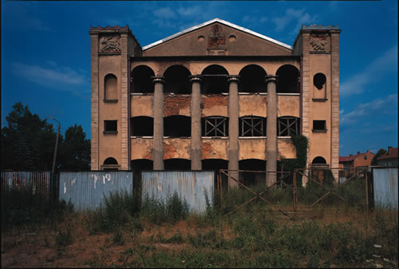
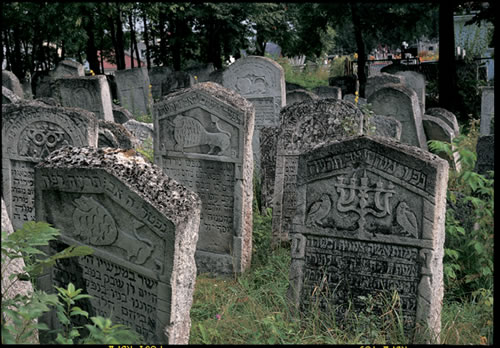
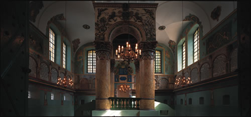
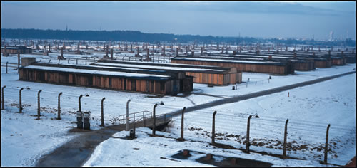

Rediscovering Traces of Memory
The Jewish Heritage of Polish Galicia
Since the Holocaust, traces of memory are virtually all that remain in Poland today of more than eight hundred years of Jewish life there. This remarkable album, published on behalf of the Galicia Jewish Museum in Kraków, offers a sensitive way of looking at that past. Based entirely on arresting, present-day colour photographs of Polish Galicia, it shows how much can still be seen today of that past if one knows how to look and how to interpret what one sees.
Publication of this book was facilitated by the Adam Mickiewicz Institute, Warsaw, as part of in the UK.
More info
Since the Holocaust, traces of memory are virtually all that remain in Poland today after more than eight hundred years of Jewish life there. This remarkable album, published on behalf of the Galicia Jewish Museum in Kraków, offers a sensitive way of looking at that past. Based entirely on arresting, present-day colour photographs of Polish Galicia, it shows how much of that past can still be seen today if one knows how to look and how to interpret what one sees.
The traces of the Jewish past in Polish Galicia can be approached from many angles. Jewish life in Poland was in ruins after the Holocaust, and so too were most of its synagogues and cemeteries. Much evidence of ruin remains, but, astonishingly, there are also traces that bear witness to the great Jewish civilization that once flourished there—synagogues and cemeteries of astounding beauty in villages and small towns as well as in the larger cities. One can also see the exact locations where the Germans murdered the Jews of Galicia in the Holocaust: not only in the infamous death camps and ghettos, but also in fields, in forests, and in rivers. The Germans tried to destroy even the memory of the Jews in Poland, and to a very great extent they succeeded; then came forty years of communism, including the antisemitic campaign of 1968. But now that Poland is once again part of a multicultural Europe, the great Jewish civilization that once flourished on Polish lands is increasingly being memorialized, by local Poles as well as by foreign Jews. Synagogues and cemeteries are being renovated, monuments are being erected, museums are being set up, pilgrimages are taking place, festivals of Jewish culture are being organized, books about Jews are being published, and there are once again rabbis and kosher food. So the traces of memory include how the past is being remembered in Poland today, and the people doing the remembering.
Given all these perspectives, the contact with contemporary realities involves a complex emotional journey: grief at a civilization in ruins; pride in its spiritual and cultural achievements; anger at its destruction; nostalgia for a past that is gone; hope for the future. Considering each element in turn and offering cultural insights and information to support each of these responses, the combination of photos and text in this book not only informs but also suggests both how to make sense of the past and how to discover its relevance for the present.
The seventy-four photographs are all fully captioned, with additional detailed background notes to explain and contextualize them. The idea is to help people understand the Jewish civilization of Polish Galicia in its local context on the basis of what can still be seen there today. People who have family connections with Polish Galicia will find this an invaluable sourcebook on their own heritage, but its innovative approach to understanding the past will appeal to anyone concerned with questions of history, memory, and identity, and how photography can make the past accessible.
Published for the Galicia Jewish Museum, Kraków, by the Littman Library of Jewish Civilization and Indiana University Press
About the authors
Chris Schwarz was an acclaimed British photojournalist whose intellectual curiosity led him to travel widely and investigate a great range of topics. He worked for publications including Time Out and the Independent; collections of his photographs on social-welfare issues—including poverty, health issues, involuntary migrations, and urban ecology—were published in book form and displayed in exhibitions. His father's origins in Lwów and his own interest in the Solidarity movement led him to Poland, where he teamed up with Jonathan Webber to work on the Traces of Memory project. Imbued with a passionate sense of social consciousness, in 2004 he opened the Galicia Jewish Museum in Kraków to showcase his photographs as a way of bringing the story of the Jewish heritage in Polish Galicia to Poland and to the world. He died in 2007.




Contents
Prologue
Map of Polish Galicia
Introduction
1 Jewish Life in Ruins
2 Jewish Culture as It Once Was
3 The Holocaust: Sites of Massacre and Destruction
4 How the Past is Being Remembered
5 People Making Memory Today
Epilogue
A Notes on Galicia, Place Names, and Sources
Background Notes
Bibliography
Index
Reviews
'This is a story in photographs—lush, beautiful, and haunted . . . It was smart to let the images speak to the reader first and place Webber's contextualization of the images with the historian's authoritative voice at the end of the book . . . Webber is doing a great service to those looking for a more sophisticated approach to contemporary Jewish Poland and the uncomfortable co-existence of past and present in the landscape.'
David Shneer, East European Jewish Affairs
'Webber's notes, in particular, distinguish [the book] from other albums . . . close attention to detail, together with cooperation between photographer and anthropologist, makes the work an important contribution to scholarship; interaction between image and analysis often tells a different story than the photograph alone would . . . Even more than written documents, perhaps, photographs underscore the challenges of accessing history beyond memory. Yes Webber's analysis and Schwarz's photographs accomplish more than finding traces. Rediscovering Traces of Memory tries to reach beyond a Jewish memory of Poland that is at once nostalgic and skewed by the Holocaust's shadow. They trace the shaping of memory, progress in overcoming barriers to dialogue, and the limits of remembering.'
Karen Auerbach, H-Judaic
'Astonishing book . . . The photography is outstanding, adding much to the poignancy of what the images portray . . . A complex subject has been imaginatively handled by dividing the book into five sections suggesting different ways of approaching it . . . We can approach this wonderful book in several ways. One could simply look at the photographs and the informative captions. However, each caption leads on to more extensive notes at the back, which in turn often point the reader to sources for further information. Webber, whose narrative is thoughtful and understated, deals sensitively with relations between Poles and their Jewish past, pointing out that much of the histry of the war is still contested and remembered differently . . . This is a beautiful and informative book that provides an inspiring introduction to Poland's Jewish heritage.'
Carla King, Irish Times
'Schwarz's photos are striking, incisive, and heartbreaking.'
Robert Leiter, Jewish Exponent
'Beautifully produced . . . gives many more people access to this remarkable record of what remains of the rich history of the Jews in Poland after the devastation of the Holocaust. Most striking is the freshness of the images, and the lack of clichés. The tragedy stares directly from the pictures but not in the form we are familiar with . . . buy the book, study the images and read the text. It gives a remarkable and moving insight into what Poland―and the world―has lost.'
Julia Bard, Jewish Socialist
Endorsements
'Polish–Jewish relations have long suffered from stereotypes and false accusations on both sides, and this book is a major step in the attempt to right the wrongs of the past . . . A courageous and honest work, imbued with spirituality and feeling for the places and the subject, rarely matched.'
Michael Schudrich, Chief Rabbi of Poland
'Chris Schwarz and Jonathan Webber have poignantly captured the ruins of memory. Tradition, religion, culture, language, architecture, homes, places of worship, and cemeteries, all beautifully photographed, clearly explained. Their work is a fitting memorial to the Jews of Galicia, who survive only through these whispered traces.'
Stephen Smith, Chair, Holocaust Memorial Day Trust, UK
'Galicia was home to a vibrant Jewish society, which over many generations shaped the scope and direction of Jewish culture and added to its intensity. Hasidism, the enlightenment of the Haskalah, and Zionism were all movements that took root in Galicia and grew in ways that changed the course of Jewish history and energized Jewish society. This exceptional bookconveys the physical and the metaphysical world of Galician Jewry, both at its peak and in its destruction by the Germans . . . Chris Schwarz’s photos draw the eye and stir the heart; Jonathan Webber’s texts are informative, moving, and written with much wisdom. Altogether, it took a rare combination of brain, of heart, and of an intelligent and penetrating eye to produce a book that adds new layers to memory and inspires a yearning for what was lost. It will be a source of pride for every Jew—whether or not they have Galician roots.'
Shevach Weiss, former Israeli Ambassador to Poland
'A remarkable tribute to the Jewish heritage of Polish Galicia . . . immortalized in this exquisite photographic record and erudite commentary. A treasure for future generations.'
Barbara Kirshenblatt-Gimblett, New York University and Museum of the History of Polish Jews
'Poignant and beautiful . . . a panoramic picture not only of what is left of Jewish life in Poland but of what it was like in its heyday in all its aspects, both good and bad. It documents where and how it was destroyed and gives a moving account of what is being done to preserve the memory of what was lost and of the people, both Poles and Jews, involved in this important undertaking.'
Antony Polonsky, Editor-in-Chief of Polin: Studies in Polish Jewry
'Jonathan Webber has a depth of knowledge about Jewish culture and the Jewish experience in Polish Galicia that few can equal. His captions to Chris Schwarz's stunning photos are deliberately brief, allowing the pictures to 'speak'on their own, but his wonderfully detailed—and highly readable—notes in the back section of the book evoke a rich texture of memory and tradition and loss and even hope.'
Ruth Ellen Gruber, author of National Geographic Jewish Heritage Travel: A Guide to Eastern Europe
'Travelling with Jonathan Webber in Galicia was one of the most moving experiences of my life. Now every reader can participate in that journey through this extraordinary book, revisiting a past that has tragically vanished but continues to move and inspire.'
Rabbi Shmuley Boteach, host of TLC's Shalom in the Home and founder of This World: The Values Network

74 colour photographs, map
ISBN: 978-1-906764-03-6
£15.95
In North America published by Indiana University Press
In Poland available only from the Galicia Jewish Museum
Publication 16 July 2009
Other books by this author:

Jewish Identities in the New Europe Edited by Jonathan Webber
Time, Memory, and Historical Consciousness in the Jewish Tradition
Traces of Memory
The Ruins of Jewish Civilization in Polish Galicia